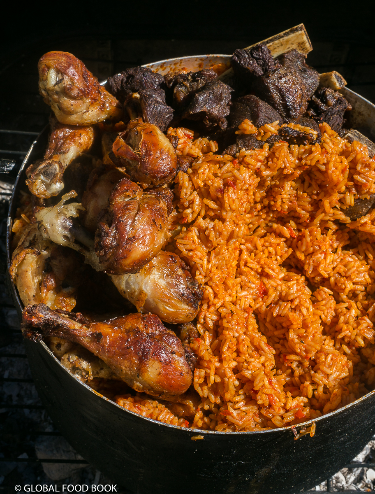

Jollof Rice

Smoked Jollof Rice!
Fresh pot of delicious, smoked jollof rice served with fried chicken and beef.
Ingredients
- Two medium tomatoes, roughly chopped
- Scotch bonnet pepper
- 1/2 medium onion, roughly chopped
- 3 small red bell peppers, roughly chopped
- 1/2 cup of vegetable oil
- 1 teaspoon each of curry & garlic powder
- 2 1/2 cups of medium-grain rice
Steps
- In a blender, combine tomatoes, scotch bonnet pepper and onions; purée. Pour out half the purée into a bowl; set aside. Add the bell peppers to the purée remaining in the blender and pulse until smooth. Add to the mixture that was set aside and stir to combine.
- Heat vegetable oil in a large pot over medium heat. Add blended vegetables along with the salt, curry powder, ground chile pepper, garlic powder, onion powder, bay leaves, ginger and thyme. Bring mixture to a boil.
- Stir in the rice until well mixed, then reduce the heat to low.
- Cover pot and let cook until rice is al dente, about 45 minutes. Check after 30 minutes; if rice is sauce-logged, remove the lid to cook off the excess sauce. If rice seems dry, stir in 1 to 2 cups water. Allow the rice at the bottom of the pot to char a bit to infuse it with a smoky flavor.